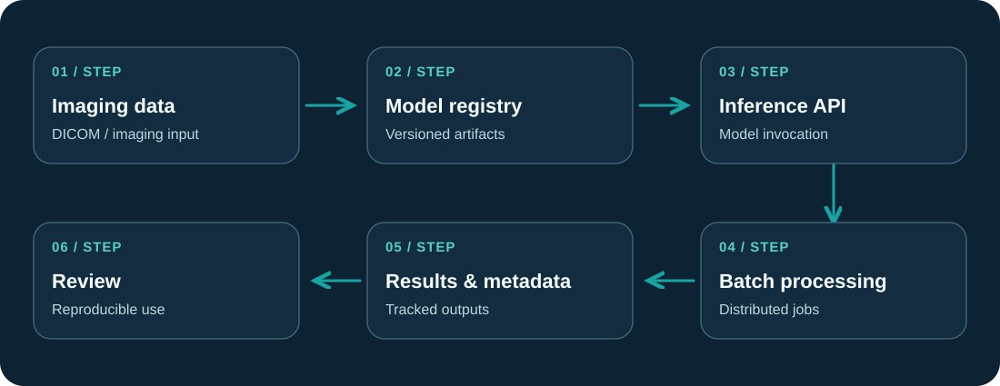

Model lifecycle and serving
Models were registered and served through a tracked workflow, with metadata and an API-facing interface.
Turning image models into testable, reusable inference workflows.
A proof of concept for registering medical imaging models, serving predictions, managing metadata, and processing larger imaging workloads.
A model that performs well in a notebook is not automatically usable by another team. Model registration, inference APIs, metadata, repeatability and data movement all matter when moving imaging workflows into shared infrastructure.
Contributed to model hosting and serving workflows, metadata handling, inference integration and data-processing evaluation.
The diagram simplifies the key ideas into an original, conceptual workflow—not a reproduction of internal architecture.

Conceptual architecture · Simplified for public communication · Not a proprietary diagram
Concrete technical responsibilities, without private code or configuration details.
Models were registered and served through a tracked workflow, with metadata and an API-facing interface.
The workflow handled imaging metadata alongside inference outputs, supporting analysis of what a model processed.
For larger inputs, the workflow explored reading images closer to distributed compute rather than relying exclusively on endpoint payloads.
Prediction outputs are easier to interpret and reproduce when linked to the model version and input context.
Request payload limitations and compute costs make one serving interface unsuitable for every workload.
Data movement and preprocessing can become bottlenecks even when inference itself is parallelized.
Project materials describe a working proof of concept, registered imaging models, API workflows and distributed inference comparisons. Internal timings and deployment configurations are withheld.
Infrastructure proof of concept, not a claim of production-scale clinical deployment or validated diagnostic performance.
This case study is a high-level presentation of selected work. It does not disclose proprietary diagrams, internal configurations, private datasets, credentials or confidential business information. Publication should still be checked against applicable employer policies.